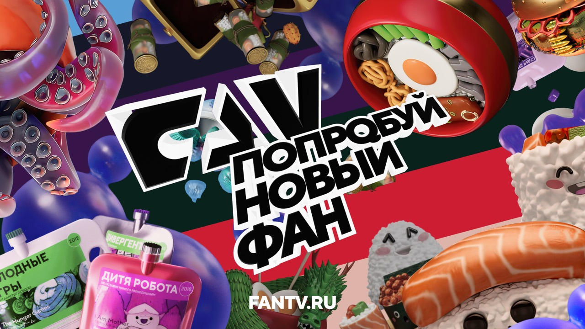
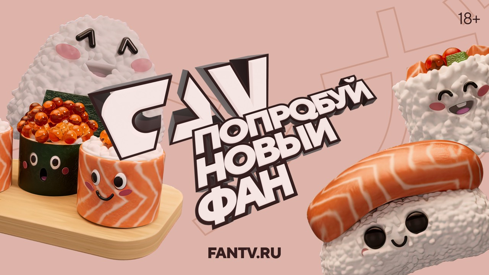
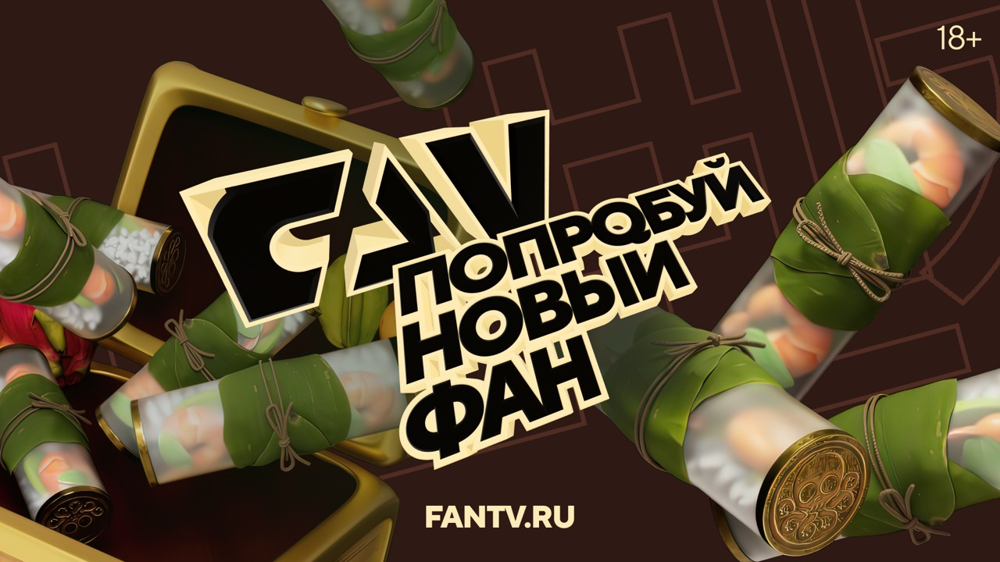
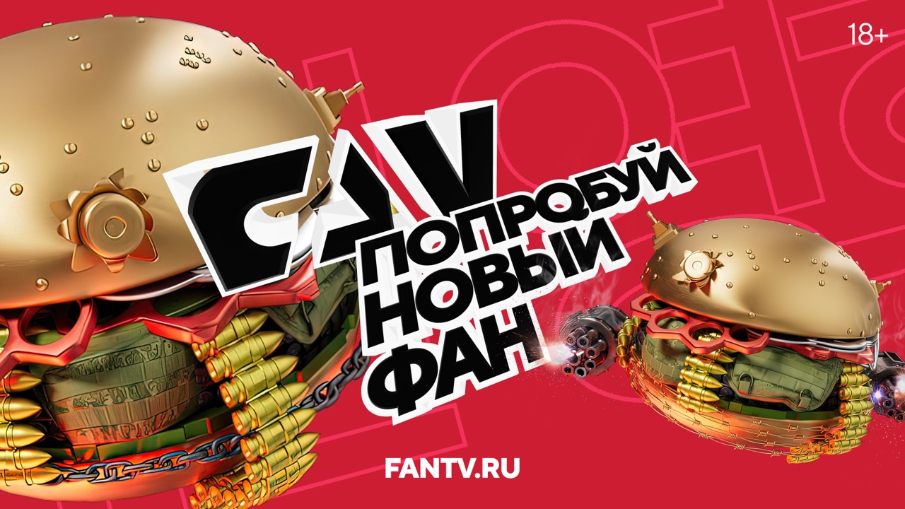
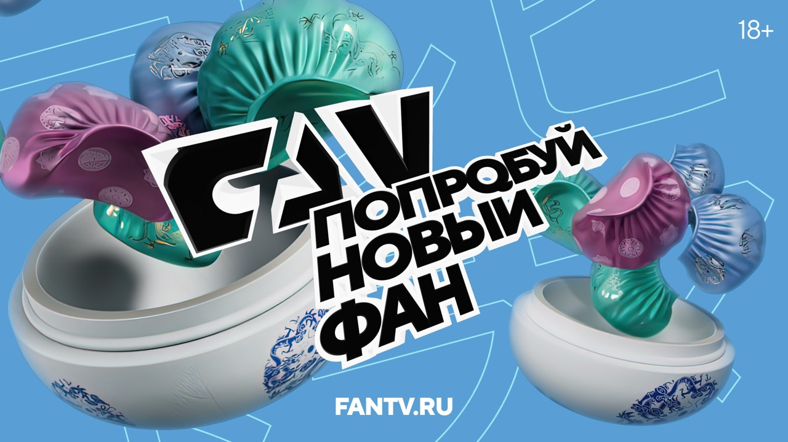
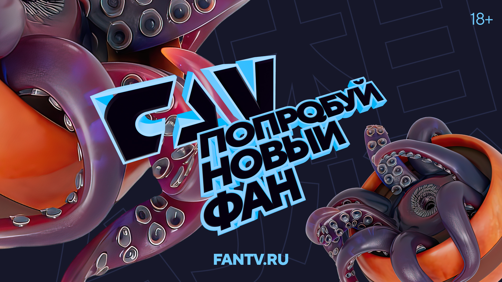
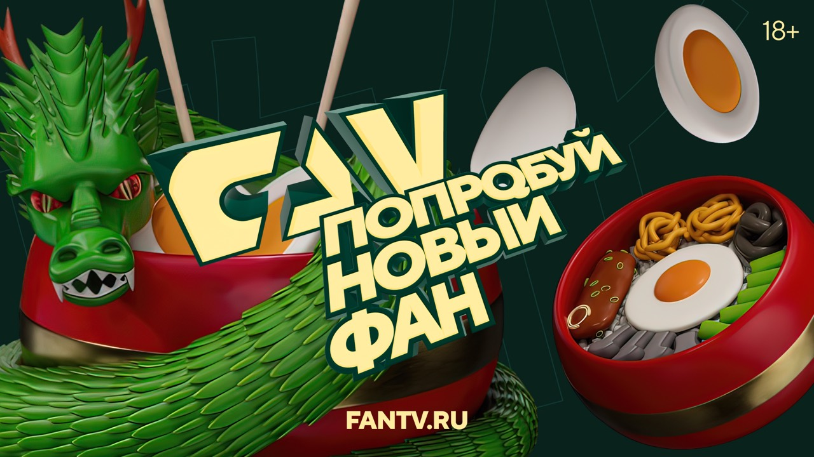
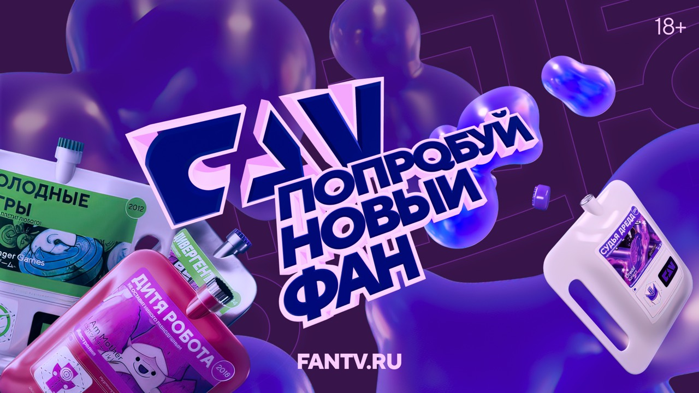

Телеканал FAN · 2024
FAN — промокампания «Попробуй новый FAN»
Обновили визуальный образ FAN и представили фэнтези, экшен и дорамы в промокампании «Попробуй новый FAN».

Когда в эфире FAN к аниме добавились фэнтези, экшен и дорамы, мы предложили зрителям «попробовать новый FAN». Каждый жанр подали как блюдо азиатской кухни: в кадре рядом с роллами, лапшой и пельменями появляются дракон и сундук с сокровищами.
Объёмный логотип и фиолетово-розово-синяя палитра связали эфирные анонсы, проморолики и цифровые материалы.
Позже идея меню легла в основу ребрендинга FAN с жанровыми маскотами.






